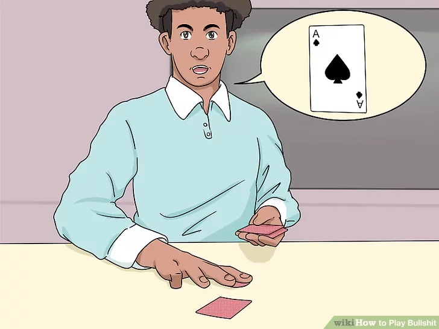
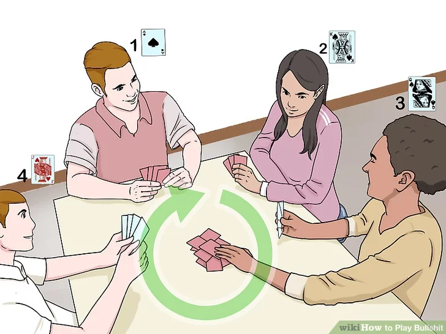
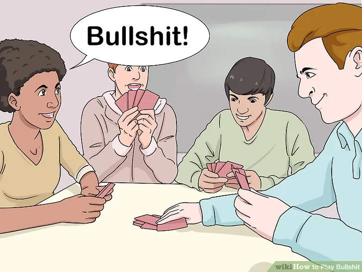
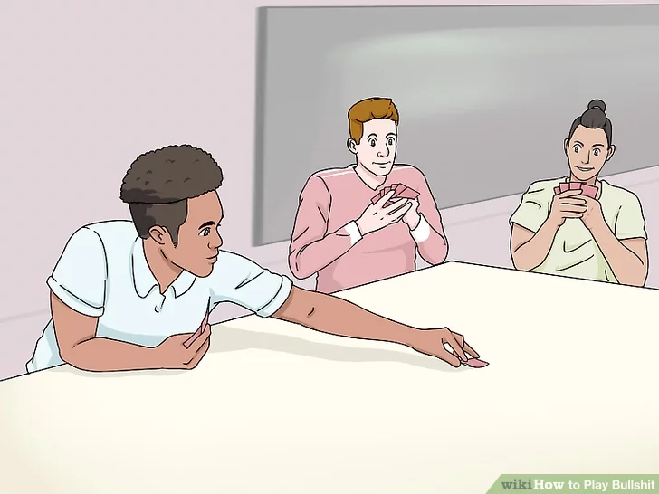
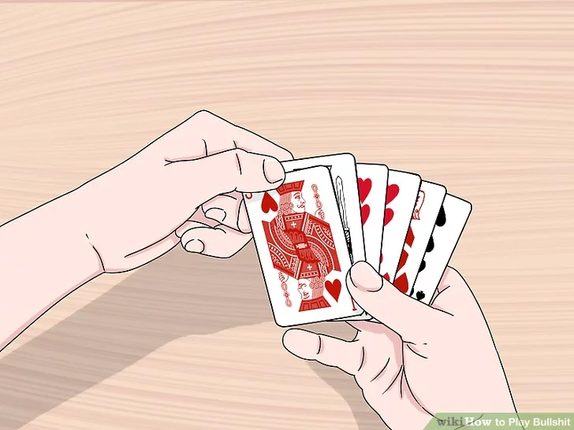

"Bullshit" (also known as "Cheat", "I Doubt It", "Bluff", "BS" & "Liar") is a multiplayer card game that involves a lot of courage, deception, and trying to get rid of all the cards in your hand. It's also a lot of fun--just don't get caught in a lie! If you want to know how to master the game of "bullshit," just follow these steps.
Download Instructions
For Saving Instructions Offline Click The Button Below
.These should be evenly distributed amongst the players. To keep the game from getting too complicated or lengthy, you should probably keep it from 3 to 6 players, though you can play the game with 2 to 10 players. Some of the players may end up with one more or fewer cards than the rest of the players, but that won't affect the outcome of the game in the long run. Before you begin, remember that the object is to get rid of all of your cards first.[1]
2.
Determine who should go first.

It can be the dealer, the person with the ace of spades, the two of clubs, or whoever has the most cards (if the distribution wasn't quite even). This person lays a card (or several) down on the table and tells the other players the type of card they just used. The person who goes first should always start by laying down an ace or a two.[2]
3.
Continue putting down the cards clockwise in consecutive ascending order.

. For example, if the first player put down one or more aces, the next player should put down one or more twos, the third should put down three or more twos, and so on. When it's your turn and you put down your cards, you have to say, "One ace," "two twos," or "three kings," and so on. You may not actually have the cards that you need to put down -- the fun is in faking it.[3]
.If you don't have any of the required cards, you can skip your turn though, it's better not to pretend to put down 3 of them -- and definitely not four. If you say you've put down 3 of a card you don't have, it's likely that a player will have at least 2 of the card and will know you're lying and will call "bullshit!"
.You can also play dumb. Let's say it's your turn to put down queens, and you happen to have two of them. Say, "What am I again?" and look confused as you look through your cards before you put them down. Your goal is to make people believe you when you're lying, and make them doubt you when you're telling the truth.
4.
Call "bullshit" on anyone who you think is lying.

.If you know someone is lying because you have the cards they claim to have in your hand, because they're getting low on cards, or just because you have a feeling they're not telling the truth, then call "bullshit!" after the person puts down his cards and announces what they are. This entails an accusation and reveal, in which the person who just played is required to turn over the cards they just put and show everyone else what they actually are.
. If the cards aren't what the player said they were and the person who called "bullshit" was right, the lying player takes all the cards from the pile and adds them to their hand.
. If the cards are what the player said they were and the accuser turns out to be wrong, all of the cards in the pile go into the hand of the accuser. If two or more people call out the player in question and they are wrong, the pile is divided amongst all the accusers.
5.
Continue play after "bullshit" has been called.

.After "bullshit" has been called, another round starts with the last person to play. As the game progresses, it will become more difficult to get away with lying during a round, especially if the amount of cards you have keeps decreasing. In the end, it will come down to luck and how good your poker face is--just try not to make any moves that are too risky, and don't call "bullshit" unless you're fairly certain the person playing has indeed lied about their cards.
6.
Win the game by playing all of the cards in your hand.

.Once one person has played all the cards in their hand, they are the winner. Of course, most people would call "bullshit" on the last play of the game, but you can get around this by making your final play very subtly and quickly, or by calling "bullshit" on the person right before you in hopes of starting the next round. Bullshit really is all about strategy, and the more you play it, the better you'll get.
.After one player wins, you can continue playing until there are two or three people left if that's how you decide to play.
.If you only have one card left, don't announce it in advance or let people know that you're about to win.
.You can also take the bold strategy -- if you only have one card left, you can pretend to count off and say, "Oh, perfect! I only have one three!" Though this is more likely to fail than not, you can have fun trying to trick your teammates.